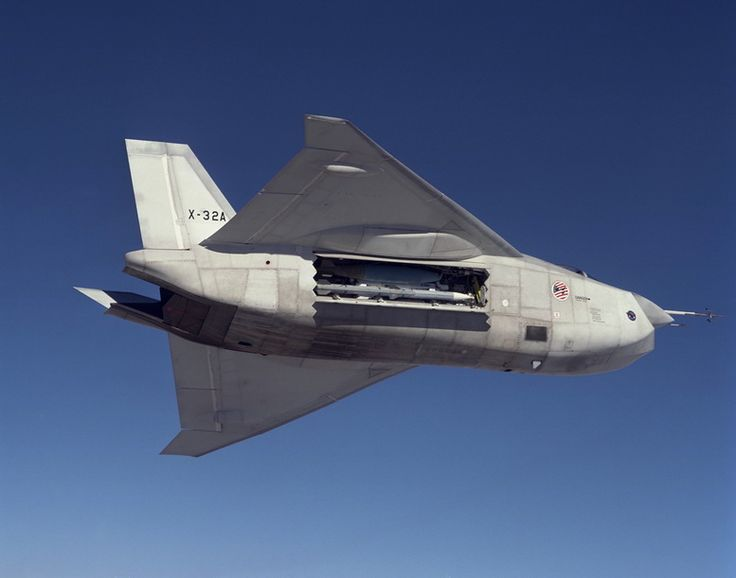

2017-12-21 10:25:00
J-20交付中共空軍已滿一年，產量果然如我估計在20架以下。但是各方消息都指出成飛正在全力增加產能，即使2018年達不到年產一個旅32架飛機，2019年也必然會超越。
上一季有照片顯示J-20試裝了WS-10C發動機，後來試飛的圖片也出現了。先前我認爲這是多此一舉的選項，因爲WS-10C與J-20自2011年出廠以來一直裝配的99M1版俄製AL-31發動機相比，紙面性能幾乎完全一致（例如推力都同樣是13噸多一點），在成熟度和可靠性上卻略有不如。照片出現後，我在留言欄的猜測是AL-31的產能跟不上J-20的擴產，而下一代WS-15的量產還需要時間；這個理論與過去三個月的諸般小道消息基本吻合，所以我想是正解。例如有内部人士指出WS-15的定型量產是訂在2020年，而且就算真的後墻不倒（中共軍工術語，指不錯過最後的進度節點），初期的產能也會很有限。未來三到五年擴產的J-20，對發動機供應量的需求還是很大的。此外WS-10C按原本計劃，本來就應該是WS-15服役前J-20裝配的發動機，只不過進度落後了七、八年罷了。
本月巴基斯坦的空軍將領宣佈將與中國合作，開發下一代戰機；一時之間，FC-31會被扶正的謠言甚囂塵上，包括中共空軍自己未來可能會考慮的低端隱身機也被拿來做意淫。當然，雖然中共海空軍都喫夠了瀋飛的虧，目前完全沒有采購FC-31的計劃，但是東北系掌控了中國航空工業的行政要職，歷史上一直是以犧牲國家利益來保障小集團的自我生存（例如WP-14發動機和J-8戰機，都是擠壓其他計劃來獨占資金的著名重大災難），所以他們利用印度DRDO式的政治壓力來搶奪訂單，並非全無可能。不過成飛其實也有一個低價版的隱身戰機計劃，已經完成設計；它基本上是單發版的J-20。因爲單發不能用AL-31或WS-10系列來將就，必須等待WS-15，所以目前還沒有原型機，也沒有開始公關促銷。不過從成飛在氣動、飛控和品管上的巨大優勢來看，任何有腦子的客戶都應該選擇這型飛機才對；巴基斯坦的軍事采購一向十分精明，又和成飛有合作的傳統，瀋飛要忽悠他們並不容易。
兩年前我曾批評F-35的氣動外型有重大缺陷，還提到單發隱身機不容易設計，這裏深入解釋一下。因爲外挂彈藥的形狀必須為氣動優化，無可避免地會强烈反射雷達波，所以真正的隱身機都只能内置彈倉。而爲了避免投彈後重心大幅改變會造成飛控的困難，彈倉必須佈置在接近重心的位置，這就與發動機和進氣道的位置安排有了衝突。F-35因爲短起垂降的B型而被迫使用單發（垂降的時候，雙發中有一個出了任何問題而使推力不平衡就必然機毀人亡），又選擇了用主發動機連桿來推動前風扇的佈局，機身必須做得很短，而且不能把彈倉放在中軸，結果只好移在發動系統的下方，這就是F-35的肥短設計的基本原因。其結果是超音速阻力極大，使它的飛行性能還遠不如上一代的F-16。
一個可能的解決方案是寬間距雙發動機佈局，彈倉就可以佈置在發動機之間的機身裏，例如俄國的SU-57（舊稱T-50）。但是這個佈局（至少在SU-57上）有兩個很大的缺陷：首先很重的發動機遠離機身中軸，滾轉時的轉動慣量很大，很不靈活；其次爲了升力體外型（提高升力）和較小的橫截面積（減低超音速阻力），機身必須做得淺，那麽結構强度和彈倉深度都會有大麻煩。SU-57至今仍然沒有彈倉門打開的照片傳世，很可能還沒有解決這些問題。
最好的佈局還是把彈倉放在發動機之前，例如F-22和J-20都選擇了這個方案。雖然兩者都是雙發飛機，換成單發並沒有絕對性的困難，只不過進氣道必須是Y型設計（因爲彈倉的關係，不能使用J-10或Typhoon的機腹進氣，否則會搞出X-32那樣的怪胎），會占用一點更多的中軸長度。這在佈局十分緊凑的F-22上，或許有麻煩，但是J-20的機身非常修長，即使縮小一號之後，找出足夠的中軸空間應該也不成問題。

隱身戰機中的奇葩：波音X-32，采用單發和機腹進氣佈局，只好把彈倉放在肥厚的機身兩側。成飛的單發隱身機是為巴基斯坦這類客戶設計的，主業是制空，和美國的JSF（Joint Strike Fighter，聯合軍種攻擊機，即F-35和X-32）不同，不能使用土肥圓的造型。
在海軍方面，017號山東艦仍然在大連接受舾裝，雷達都已經裝上了，並且開始了繫泊試驗。但是根據有海事專業背景的軍迷估計，要到明年第二季才能進行試航。至於003級018號航母，有好幾個不同小道消息來源都宣稱已經在江南造船厰開工。依017號的先例，開工到下水大約是44個月，那麽應該會在2021年初下水。這一級航母排水量大概是八萬噸級（原本使用蒸汽彈射器時計劃七萬多噸，最新謠言說增長放大了些），基本相當於美國的小鷹號，但是配備了電磁彈射器，算是一個高度現代化的常規動力超級航母（Super Carrier）。
搭載於071級LPD兩栖登陸艦的726級氣墊船也正在江南造船厰積極建造之中。我在今年第一季提到新出現了3艘，現在傳説中的批次訂單是15艘，連同2009年下水的第一批次（當時可以使用烏克蘭原廠的燃氣輪機）3艘，總共18艘，足以配備全部6艘071級（最大載量為4艘氣墊船，但是目前似乎只計劃各裝配3艘）。
055級在江南連造4艘之後，在大連也開建了，看來第一批訂單的確是8艘。據稱下一批次（即055A級）已經在積極籌備之中，應該會用上類似054B的全電動力系統。052D的訂單總數傳言是19艘，那麽在兩年内可能會建造完畢，但是後續的通用驅逐艦（052E？）還沒有正式列入官方的計劃。我們在2018年有可能看到上船臺的，是054B級反潛護衛艦和075級LHD兩栖攻擊艦，但是最近有消息說兩者都遇到一些技術困難，會有幾個月的延遲。
成飛的雲影是新一代的長程高空無人機，配備了渦噴發動機，適合在海上高速巡邏。最新的照片顯示它的標準反艦武器是一對YJ-9E，這是共軍新的制式小型空射反艦飛彈。以往中共的小型反艦飛彈主要供外銷，有兩個廠商系列，YJ-9E的氣動佈局與賣給伊朗的C-701基本相同，應該有比較強的血緣關係。它射程的公開數據是18公里（應該是低估，這種尺寸的空射導彈通常有25公里以上的射程，由高空高速無人機發射可能達到50公里），30公斤的高爆半穿甲彈頭適合打擊2000噸以下的艦艇。它的前身YJ-9（YJ-9E的新改進可能集中在制導系統上），幾年前出現在海軍Z-9直升機上，正是我評論沱江艦時提起的飛彈艇殺手。現在有了航程和航速都高於直升機4-6倍的廉價載具，中國近海已經不容許敵對的小型艦艇存活了。
陸軍本季有多種新裝備正在西藏進行高原測試，包括1）兩架Z-20通用直升機，可能配備了不同的發動機來做對比試驗；2）AV500W無人直升機，裝備了2-4枚超小型導彈，具有察打一體的能力，升限在5000公尺以上，對這種尺寸（半噸級）的無人直升機來説，若非絕無僅有，也算十分罕見；3）準備配備武警的新型4X4小型裝甲車；4）下一代的6X6東風通用卡車。
前面提到的AV500W，原本是為中東客戶設計的，但是現在開始强調高原性能，很明顯地是做爲對中印邊界可能衝突的針對性解決方案之一。另一個適合在喜馬拉雅山區作戰的新裝備是基於6X6東風卡車的120毫米迫榴炮。2016年的珠海航展上，北方工業展示了基於4X4東風卡車的原型，當時的外銷編號是SH-9。現在共軍決定自購，但是升級了載體，應該是爲了有足夠的高原機動力。我以前解釋過，在4000公尺高度，發動機功率損失超過一半，所以履帶式自行火炮不太適合中印邊界作戰，有大量冗餘出力的卡車炮才是正解。
【後註一】補充一點，共軍的海軍陸戰隊已經正式決定由兩個旅擴編為七個旅，即第1，2，3，4，5，6和特戰旅（空降軍也是同樣的七個旅）。如此一來，就算中共陸軍不出手，光是海軍陸戰隊就足以橫掃國軍。
【後註二】這裏澄清一下，我並不是說共軍計劃只用海軍陸戰隊來對臺作戰；這仍然是整個東部戰區的職責。海軍陸戰隊和空降軍兩個輕裝軍，再加上重裝的112師（一般軍迷昵稱為“土豪師”）和兩個獨立空突旅，似乎是未來的遠征部隊，可以空運+海運到中東或非洲對抗中型敵人。不過目前共軍第一波次的戰略運輸能力只有一個旅左右，必須大量裝備Y-20才能讓這些部隊有用武之地。